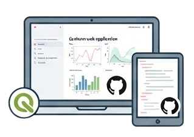

Supporting researchers, environmental consultancies, and environmental managers in the analysis, interpretation, and communication of environmental data.
Each service is tailored to the scientific or operational objectives of your project.





Developing methods and tools for complex data visualization and ecological indicator production to support research, environmental management, and decision-making.
The approaches developed for aquatic ecosystems can be adapted to a wide range of environmental contexts.
Applicable to a wide range of ecosystems:
soils, the atmosphere, and urban environments
Statistical modelling, multidimensional data visualization
Design of interactive digital tools
Addressing environmental challenges using a shared methodological framework
Integrating heterogeneous datasets to better understand system dynamics
The objective is to apply these skills to interdisciplinary projects,
contributing to a comprehensive understanding of environmental challenges.